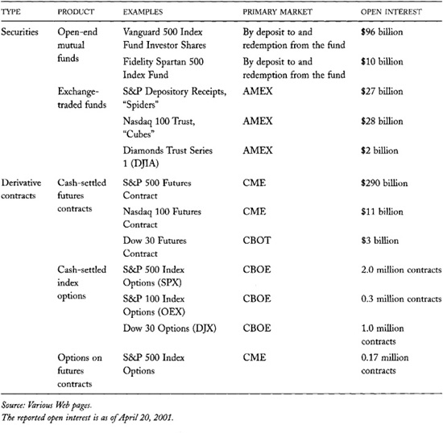

Chapter 23: Index and Portfolio Markets
Index trading is one of the most important financial innovations of the twentieth century. The nominal dollar value of trading in equity index products now is greater than the total dollar value of trading in the underlying securities. The growth of index trading has had a profound effect on equity markets. It is also increasingly affecting debt markets.
Index markets trade index products. Index products include index futures contracts, index option contracts, and securities that represent ownership in index funds. Index funds are portfolios that their managers design to replicate the performance of various price indexes. Most index funds track market equity indexes. Some funds track debt indexes and sector equity indexes.
Index products and index markets are extremely popular. Many people have decided that they would rather invest in an index product than risk losing money investing with an active investment manager. Index products also are attractive to speculators who want to speculate only on index risks or only on firm-specific risks. The former buy or sell index products to establish their speculative positions. The latter sell or buy index products to hedge the index risk in their long or short positions in individual securities.
The widespread use of index strategies has changed the character of markets. Index markets are far more liquid than the underlying cash markets upon which their products are based. Price changes in index products generally lead changes in the cash index. Consequently, many people believe that index markets are the "tail that wags the dog." You must understand index strategies in order to understand the relation between index markets and their underlying cash markets.
In this chapter, we will briefly consider how indexes are computed and how index funds are managed. We will then turn to why index products and index markets are so popular. You may find this section particularly useful if you are unsure whether you should invest or speculate in equities. The chapter closes with a discussion of the various ways that traders exchange index risks.
23.1 PRICE INDEXES
People use price indexes to characterize the values of lists of instruments. The instruments upon which a price index is based are the index components. The index components determine the character of the index. Indexes exist for entire markets, for subsets of a market, and for sets of markets. The instruments may be equities, debt securities, commodities, or currencies. Indexes that include only a small subset of market securities are narrow indexes. Narrow indexes have been defined for small and large securities, value and growth securities, industry sector securities, and securities of firms that do business in narrow geographic regions.
Most price indexes are proprietary products that exchanges, brokers, or data vendors compute. Although index creators sometimes sell their indexes, they often offer them to their clients to promote their businesses. Many index creators license their indexes to firms that base index products upon them.
The Major Market Index and The Major Market Index
Dow Jones and Co. owns the Dow Jones Industrial Average (DJIA), which is a price-weighted index of 30 large U.S. stocks. The list originally included only industrial stocks. It now includes some stocks in the finance and services sectors of the economy. The Dow 30 is the best-known U.S. market index. It is the major market index.
For many years, Dow Jones refused to license the DJIA to options and futures exchanges that wanted to create contracts based upon it. The American Stock Exchange therefore created an index called the Major Market Index (MMI). The MMI is a price-weighted index of 20 blue chip stocks. Not coincidentally, most of the stock MMI stocks are also Dow 30 stocks. Changes in the MMI therefore are very closely correlated with changes in the DJIA. The American Stock Exchange trades options on the MMI using the ticker symbol XMI. It also licensed the index to the Chicago Mercantile Exchange, which traded futures on it.
In 1997, Dow Jones finally licensed the DJIA to the Chicago Board of Trade (CBOT) and to the Chicago Board Options Exchange (CBOE). The CBOT Dow Jones Industrials futures and the CBOE Dow Jones Industrials option contracts have been very successful. Both have killed their respective MMI competitors. The CME stopped trading its MMI contract in 1999. Although the AMEX MMI option contract continues to trade (as of December 2001), it no longer has significant open interest.
All price indexes are essentially just averages of the prices of their index components. Indexes differ by the methods used to compute those averages, however. The two most common index types are price-weighted and value-weighted indexes.
A price-weighted index is proportional to the sum of the prices of the index components. The highest priced instruments therefore have the greatest influence over the values of price-weighted indexes. The Dow Jones Industrial Average (DJIA) and the Nikkei 225 Stock Average are the best-known price-weighted indexes.
A value-weighted index is proportional to the total capital value of all index components. Traders therefore also call value-weighted indexes capitalization-weighted indexes. Securities with the highest capital value have the greatest influence over the values of value-weighted indexes. Most price indexes are value-weighted. The S&P 500 Index is the best-known value-weighted index.
The value of an index is obtained by dividing the price or value sum by a constant index divisor. The divisor originally was a number that the index creator chose to ensure that the index started at an arbitrary initial value. Divisors now change only when necessary to ensure that the value of an index does not change when the creator adds or deletes index components or, in the case of a price-weighted index, when a stock splits. For example, the divisor of a price-weighted index must increase when a high priced stock replaces a low priced stock. Otherwise, the change would unnaturally increase the value of the index. Likewise, the divisor of a value-weighted index must increase when a high capitalization stock replaces a low capitalization stock. The divisors of value-weighted indexes do not have to change when stocks split, because splits do not change total capital values.
They Each Manage About 3 Percent of All World Equity
Barclays Global Investors is the world's largest index fund manager. As of December 2000, the firm had 571 billion dollars under management in various U.S. and international equity index funds. (The firm had 802 billion dollars of assets under management, counting all asset classes.) By comparison, total world traded equity market capitalization was then approximately 31 trillion dollars. Counting only index funds, Barclays Global Investors manages a bit less than 2 percent of all traded equity in the world.
The world's largest equity manager is Deutsche Asset Management, which manages about 1 trillion dollars worldwide in many subsidiaries.
Sources: [www.barclaysglobal.com/about/who_we_are/assets_rankings.¡html]; [http://www.fibv.com/publications/Ta1300.pdf].
You may occasionally encounter equal-weighted and geometrically weighted indexes. Equal-weighted indexes measure the returns from investing an equal dollar amount in each index component. The index values represent the cumulative returns to this hypothetical investment strategy. The best-known equal-weighted index is the CRSP (Center for Research in Security Prices) equal-weighted market index. It is used primarily in academic research. Geometrically weighted indexes average logarithmic returns rather than prices. The Value Line Geometric Index is a value-weighted index of logarithmic returns.
A price index is dividend-adjusted if it is adjusted upward when securities pay dividends. Traders also call dividend-adjusted indexes total return indexes because they measure the total return---capital gains plus income yield---that investors would receive if they could invest in the index without any transaction costs. People generally use total return indexes as benchmarks against which they measure the performance of their portfolios. The DJIA and the S&P 500 Index are not dividend-adjusted indexes. Corresponding total return indexes for these two indexes, however, are widely available.
23.2 INDEX FUNDS
An index fund is a portfolio that index managers design to replicate the performance of an index. Tracking error is the difference between the portfolio return and the corresponding dividend-adjusted index return. Index fund managers try to minimize their tracking errors. Most U.S. index funds try to replicate the S&P 500 Index, although other indexes are becoming increasingly popular.
Replicating a value-weighted equity index is quite simple. If the value of the index fund is 0.01 percent of the total capitalization of all the index components, the index fund manager simply buys 0.01 percent of the outstanding shares of each index component. The value of the fund therefore is exactly proportional to the total value of all index components, which is proportional to the value of the value-weighted index. Consequently, percentage changes in these three quantities will be identical. Index managers must rebalance a value-weighted portfolio only when the list of index components changes. Otherwise, the fund simply holds its securities.
Replicating a price-weighted equity index is equally simple. The index fund simply holds an equal number of shares in each index component. The value of the portfolio therefore is proportional to the sum of the prices of the index components, which is proportional to the price-weighted index. Percentage changes in these three quantities therefore will be identical. Index managers must rebalance price-weighted index portfolios whenever the index list is changed and whenever stocks split.
To replicate the returns to a dividend-adjusted index, index funds must reinvest their dividends as they are paid.
Index funds generally slightly underperform their target indexes because various frictions drag down their performance. These frictions include transaction costs resulting from dividend reinvestment, accommodating deposits and redemptions, and rebalancing transactions when the index list changes. Management fees also reduce fund performance.
The Price Impacts of the Annual Russell Reconstitution
Many U.S. stock index funds try to replicate the value-weighted Russell 1000, 2000, or 3000 Index. The Russell 1000 and 3000 Indexes respectively consist of the 1,000 and 3,000 largest publicly traded U.S. firms, ranked by their common stock market capitalization. The Russell 2000 Index consists of firms ranked between 2,001st and 3,000th in market capitalization.
The Frank Russell Company, an investment management consultant, annually reconstitutes its indexes at the close of trading on the last trading day in June, based on market capitalizations as of the close of trading on the last trading day in May. Stocks that have grown in size are added to the Russell 3000 or are moved up from the Russell 2000 to the Russell 1000. Stocks that have lost value are moved down from the Russell 1000 to the Russell 2000 or are dropped from the Russell 2000 and 3000. Stocks that stop trading due to bankruptcies or mergers are dropped when they stop trading.
Index funds that replicate the Russell Indexes rebalance their portfolios when the Indexes are reconstituted each June. Since these funds must buy the additions and sell the deletions near the same date, they often have substantial price impacts on these stocks during the months of June and July. In the six years from 1996 to 2001, the Russell 3000 additions outperformed the deletions by an average of 15 percent in June and underperformed the deletions by 5 percent in July.
The Russell 3000 reconstitution price impacts are quite large because these stocks are quite small. The reversal in prices in July indicates that some of the price impact is transitory. The remaining difference in June returns may be due to the increased value investors place on stocks in the Russell Indexes---perhaps because they trade in more liquid markets---or to a well-known momentum anomaly that affects the returns of small stocks. Some of the difference may also reverse in August and later months.
Portfolio rebalancing has similar effects when Standard & Poor's changes its stock index components.
Source: Ananth Madhavan, "The Russell Reconstitution Effect," September 26, manuscript, 2001. To be published in Financial Analysts Journal.
Index funds can slightly improve their returns by careful management of their trading. In particular, they can supply rather than demand liquidity when trading, they can substitute nonindex components when index components are expensive to trade, they can rebalance only when accommodating deposits and redemptions and when reinvesting dividends, and they can hold only a subset of the index components to minimize the number of securities that they have to trade. Although these policies tend to increase returns, they also generally increase tracking error. Many funds therefore do not aggressively employ them.
23.3 THE ARGUMENT FOR INDEXATION
Active portfolio managers are speculators who try to beat the market by clever trading. Active managers may be informed traders, value traders, or technical traders. The turnover of a portfolio is the ratio between the total dollar value of all portfolio purchases (or sales, or average of purchases and sales) in a given period and the total value of the portfolio. Active managers often have turnover rates of more than 100 percent per year. They typically charge between 1 and 3 percent for their services.
A Perspective on Bad Active Management
Active managers do not lose because they consistently buy instruments that then fall and sell instruments that then rise. Funds that consistently make such mistakes could greatly increase their profits simply by selling whenever their research suggests that they should buy, and buying whenever their research suggests that they should sell. Bad research does not create systematically wrong signals---it merely creates random noise.
Active managers do not lose because they consistently buy losers and sell winners. They lose because they consistently buy and sell.
In contrast, passive managers construct portfolios and then leave them alone. Since they rarely trade, passive managers usually have turnover rates between 0 and 10 percent per year. Passive managers typically charge less than 15 basis points (0.15 percent) for their services, whereas active managers charge 50 to 100 or more basis points.
Most active managers cannot beat the market because transaction costs---brokerage commissions and management fees---reduce performance in what is otherwise a zero-sum game. Without transaction costs, the value-weighted average return of all portfolios would be equal to the value-weighted market index return. Transaction costs ensure that the average portfolio return is always less than the market index return. Since active managers trade frequently, they tend to underperform the market.
These implications of the zero-sum game are logical conclusions based on simple accounting principals. They are always true.
Since these implications must be true, empirical results on the performance of active fund managers cannot be surprising: As a group, active fund managers underperform the market. In any given quarter, only one-fourth of all mutual funds beat the market. If there were no transaction costs, if mutual funds represented a random sample of all funds, and if small funds on average performed no better than large funds, we would expect that half of all mutual funds would beat the market. Indeed, if you add back transaction costs, about half of all mutual funds do beat the market. Funds underperform because of their transaction costs.
Interestingly, the set of winners varies from quarter to quarter. Funds generally do not persistently outperform the market. This result is not surprising: Our discussions in chapter 22 suggest that luck is a more important determinant of performance than skill.
The set of extreme losers does not vary as much as the set of winners. Extreme losers lose because they trade too much. It is must easier to consistently lose than to consistently win.
Some managers undoubtedly can beat the market on average, even after accounting for their transaction costs and management fees. Unfortunately, as we saw in chapter 22, identifying such managers is very difficult.
Many uninformed investors employ buy and hold strategies to avoid the difficulties of selecting skilled active managers and the costs of investing with unskilled active managers. Buy and hold investors avoid trading losses by not trading. They also avoid high management fees.
Since index funds implement buy and hold strategies, they are very attractive to investors who want exposure to index risk without the risk of substantially underperforming the market. The minor frictions associated with index fund management ensure that index funds will slightly underperform their indexes. Although index funds slightly underperform their indexes, they regularly beat three-quarters of all active managers.
Once again, note that this regularity is not simply an empirical fact. It is an implication of the zero-sum game.
Although investors can save transaction costs by pursuing any buy and hold strategy, they generally choose to invest in broad-based market index funds because they offer well-diversified portfolios that replicate the market. Since market index returns are widely published, index investors can easily audit whether their managers are doing what they expect them to do.
The Program Trade Buzzer
The New York Stock Exchange used to print electronically routed (SuperDot) orders on the exchange floor. Each trading post had several dot matrix printers that printed the orders. Floor traders could easily recognize when program traders submitted their orders by the simultaneous buzz that these printers made when printing order tickets for the various stocks in the program trades.
The Exchange no longer prints Super Dot orders. Instead, it routes them directly to the specialists' electronic order books.
23.4 LIQUIDITY AND PRICE FORMATION IN INDEX MARKETS
Index markets and index trading mechanisms allow traders to trade index risk more cheaply than they could by trading each component instrument separately. Several factors ensure that index products have low transaction costs.
First, index dealers face little risk of trading with well-informed traders. Most index traders are uninformed investors. Few traders have valuable insights into the future direction of the entire market. Accordingly, index dealers do not have to quote wide spreads to recover from uninformed traders what they lose to informed traders.
Second, index markets tend to be very active because most people trade the same index products. Buyers therefore can easily find sellers. Moreover, since dealers can turn over their inventories quickly in active markets, they face little inventory risk, which allows them to quote tight markets.
Finally, traders of index products generally need to arrange, clear, and settle only a single transaction. Reducing trade to a single transaction saves time and effort. Index traders who trade the underlying component instruments have to arrange many trades, which is substantially more expensive.
Traders trade the index components when they need to assemble or disassemble index portfolios. These trades generally are arranged as program trades. A program trade involves the simultaneous submission of many orders at the same time. For statistical purposes, the New York Stock Exchange and the Securities and Exchange Commission classify program trades as any trades that involve 15 or more coordinated transactions having a total value of 1 million dollars or more. These trades represent about 27 percent of trading volume at the NYSE. Index arbitrageurs who need to construct or liquidate index portfolios do about 9 percent of the reported program trade volume at the NYSE and about 2.4 percent of total NYSE volume. The remaining 91 percent of program trading volume is due to other portfolio trading strategies, many of which are also index-based. Traders who do program trades generally use specialized order list processing software to manage their orders.
Price changes in index markets generally lead changes in the cash index. Index traders are concerned only about discovering the price of index risk. In contrast, traders in the component securities must concern themselves with pricing all of the risks inherent in their securities. Index risk is usually much less important to them than security-specific risks. Most index markets therefore discover the prices of index risk much faster than do the many individual markets in which their index components trade. Traders in individual security markets therefore look to index markets to get a sense of where the market is going.
23.4.1 Package Trading, Basket Trading, and Portfolio Trading
Package dealers make firm bids or offers for entire portfolios. When these portfolios are index portfolios, the costs of trading them are often quite low.
ESP at the NYSE
Following the stock market crash of 1987, the New York Stock Exchange decided that it would create an organized market for institutional-sized package trading in the S&P 500 portfolio. The Exchange created the Exchange Stock Portfolio (ESP), a portfolio of all S&P 500 stocks. Due to problems with fractional shares for smaller index stocks, the NYSE sized the ESP so that it was worth about 6 million dollars.
The NYSE enlisted five major investment banks to act as competitive market makers in the ESP. Each was required to make a firm bid and offer for the ESP.
The ESP started trading in October 1989. The product was not successful. Trades only occurred only when one dealer picked off another dealer who was slow to adjust his quotes in response to changing market conditions. During the 25 months that the ESP traded, fewer than 5 of the 269 total trades were agency trades arranged on behalf of a client.
The result was not surprising, considering that the price of S&P 500 Index risk then was (and still is) primarily discovered in the S&P 500 futures pit on the floor of the Chicago Mercantile Exchange (CME). The ESP dealers could never quote a market as tight as the futures market because they were away from the pit, and therefore away from the most recent and most reliable information about S&P 500 Index values. The ESP dealers were also at a disadvantage compared to the CME floor traders because the ESP dealers had to quote continuous firm markets for a 6 million dollar transaction. In contrast, CME floor traders were not---and still are not---obligated to quote firm markets for any size.
To facilitate trading of the ESP, the NYSE modified its trading systems to permit decimal pricing. Few people know that the NYSE was able to trade on decimals for 11 years before it switched its common stocks to decimal pricing.
This market is variously known as the firm bid/offer market, the package trading market, the basket market, or the portfolio trading market.
The firm bid/offer market works as follows. A trader submits a characterization of the portfolio to one or more package dealers. The characterization indicates whether the portfolio is an index portfolio. If it is not an index portfolio, the characterization includes information about the securities in the portfolio. The information includes summary statistics about quantities, firm sizes, betas, price levels, average trading volumes, volatilities, primarily exchange listings, and index components. The package dealers use this information to quote firm prices for the portfolio. They typically express prices relative to the end-of-day value of the portfolio. For example, a package dealer may bid the closing value minus 15 cents per share to buy the portfolio, or ask the closing value plus 20 cents per share to sell the portfolio. The trader usually arranges the trade with the package dealer who offers the best price. To prevent market manipulations, the trader reveals the list of securities only after the market closes.
Traders often solicit firm bids and offers for portfolios because they can often obtain better prices and faster trades than if they traded each security separately. Package dealers generally offer better prices for portfolios than for individual securities because informed traders are less likely to trade portfolios than individual securities. Dealers therefore are less likely to be hurt by informed traders when trading portfolios than when trading individual securities.
Traders who do not have trading systems that allow them to easily do program trades especially benefit from the firm bid/offer market. They pay the package dealers to assume their trading problems. Package dealers can offer better prices than their clients can obtain because they generally are better traders than their clients are. Package dealers also may be able to place the portfolio, or significant parts of it, with their other clients. If so, they can facilitate the trade quite cheaply.
23.5 INDEX PRODUCTS
Index risks trade in many forms. Index products include several types of index securities and derivative contracts. Table 23-1 presents a summary of the major U.S. broad-based index products.
The most common index securities are open-end mutual funds that hold index portfolios. Traders buy these securities directly from the fund at closing net asset value prices. They likewise redeem their shares for cash by trading directly with the fund. The main disadvantages of these funds are that traders cannot trade them within the day, the funds must maintain cash balances to accommodate deposits and redemptions, and the funds must trade their underlying securities when deposits and redemptions do not net to zero.
TABLE 23-1.\ Major U.S. Broad-based Index Products

Exchange-traded index funds (ETFs) are becoming increasingly popular. ETFs are trusts that typically hold index portfolios. Units of the trust trade like stocks. Most people buy and sell these trust units at exchanges and ECNs. Large traders, however, can create new units by depositing an index portfolio with the trust. They likewise can redeem units by giving them to the trust in exchange for their pro rata share of the index portfolio. Exchange-traded funds are growing in popularity because traders can trade them at any time and because they do not have to accommodate small investor deposits and redemptions. ETFs also generate fewer tax liabilities for investors than do open-end funds because they do not buy and sell securities when investors deposit and redeem shares. Finally, ETFs do not have to manage shareholder accounts as open-end mutual funds do.
The most important derivative index products are index futures contracts. Futures contracts are especially popular among hedgers and speculators because they can buy and sell them without posting large margins. Their main disadvantage as a vehicle for holding long-term index risk is that traders must roll over their positions into new contracts when their current contracts expire. These rollover transactions generate transaction costs.
Cash-settled index option contracts constitute the last major class of index products. Speculators, hedgers, and gamblers primarily use them.
23.6 SUMMARY
Interest in index markets has increased substantially since the early 1970s as investors have better understood the implications of the zero-sum game. On average, active managers cannot outperform the market. Transaction costs and high management fees ensure that they underperform the market on average. Investors who do not want to actively speculate---either by themselves or by choosing investment managers---find that index funds are quite attractive.
The removal of index order flow from underlying security markets to index product markets has greatly decreased the costs of pursuing index strategies. Index markets are quite liquid because they concentrate order flow and because few traders are well informed about broad-based index values. Index products are much cheaper to trade than the component instruments.
Low transaction costs in index markets have made these markets very attractive to speculators. They use them to speculate in index risk or to hedge out the index risk associated with their speculative positions in individual securities.
23.7 SOME POINTS TO REMEMBER
• Indexes characterize the average price performance of a set of index stocks.
• Index funds hold portfolios designed to replicate the returns of a price index.
• Index funds have very low turnover rates because managers rarely need to rebalance index portfolios.
• Investors hold index products to avoid transaction costs and to eliminate losses often associated with active management.
• Index markets provide low-cost ways to trade index risk.
• Index dealers are generally unconcerned about security-specific risks.
23.8 QUESTIONS FOR THOUGHT
• What is the relation between a price index and a total return index?
• What would happen to liquidity if buy and hold managers held 90 percent of all equity? Would prices become less informative? What active traders, if any, would benefit?
• What effect do you think the switch of index trading from program trading to index products has had on liquidity in underlying markets?
• Has the decrease in index transaction costs made new trading strategies possible? How do we all benefit from traders who pursue these strategies?
• Index funds generally just slightly underperform the market. Is the quest for the average market index return an immoral search for mediocrity?
• What strategies can index funds employ to improve their returns?
• How can order anticipators and price manipulators profit from the Russell reconstitution?